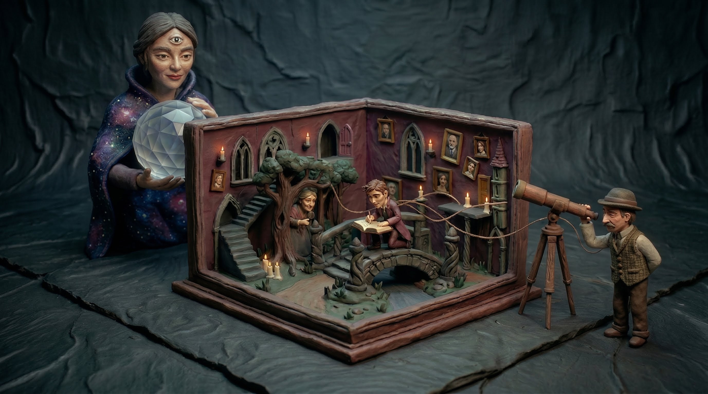
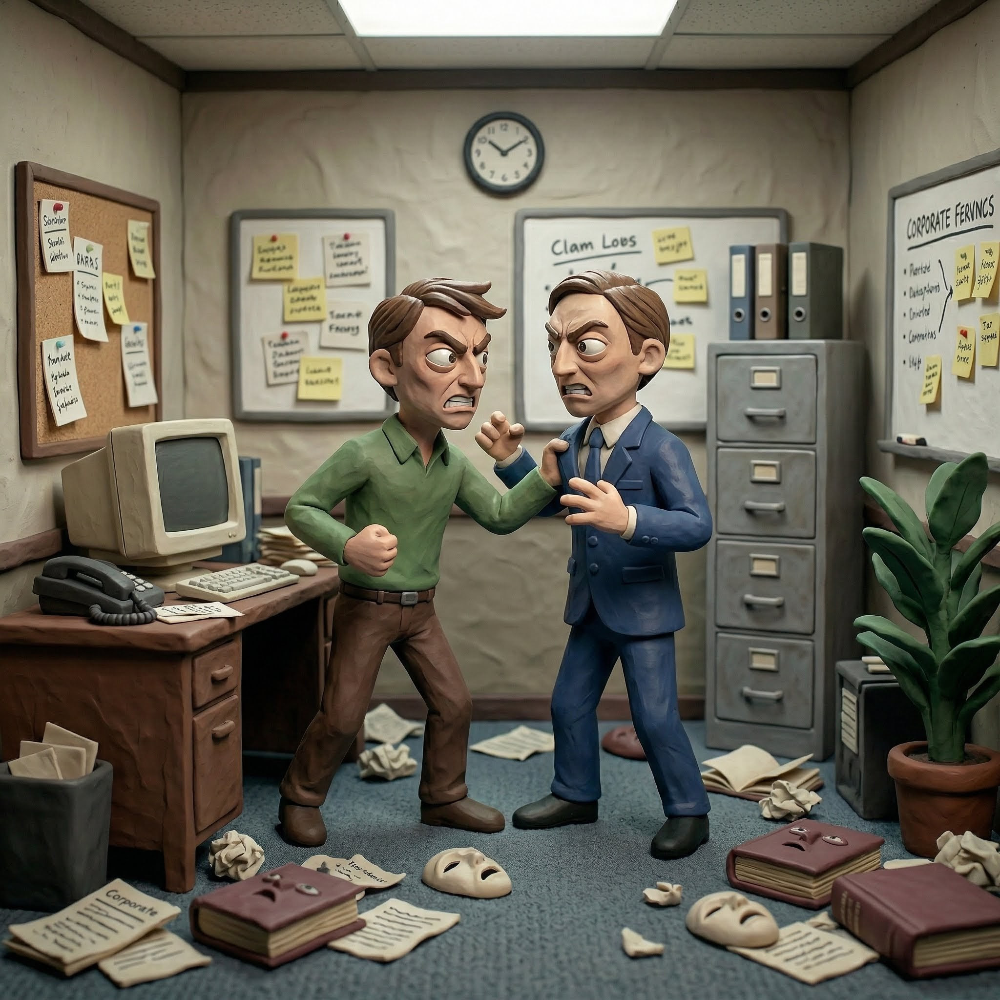
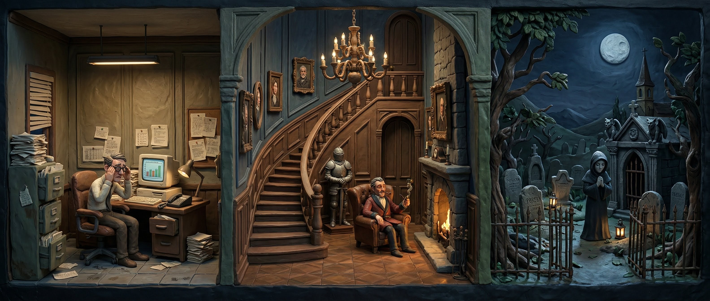
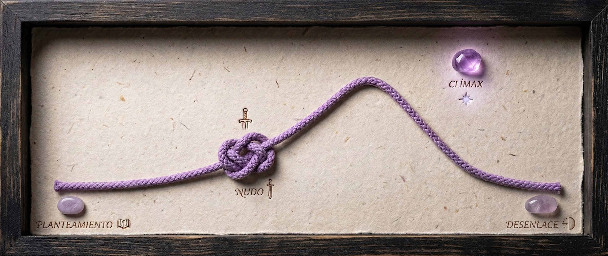

El Arte de Narrar
Explora los hilos que tejen cada historia y descubre cómo convertir tus ideas en mundos inolvidables.
Capítulo 1 El Narrador
La voz que nos guía. No es el autor; es una creación que elige qué decirnos, cómo decirlo y qué callar.
Existen cuatro tipos principales de narradores dependiendo de si participan en la historia (internos) o si la cuentan desde fuera (externos).
Protagonista
Narra en 1.ª persona ("yo") y participa en los hechos. Su percepción es parcial: puede interpretar, ocultar o incluso equivocarse.
Testigo
Narra lo que ve que le sucede a otro. Participa en la historia pero su rol es de observador activo.
Omnisciente
Narra en 3ª persona. Lo sabe absolutamente todo: pensamientos, pasados y futuros de cada personaje.
Observador (Objetivo)
Narra en 3ª persona. Es como una cámara de cine: solo cuenta lo que se ve y se oye, sin acceder a la mente de nadie.

Voz y focalización no son lo mismo
La voz responde a quién cuenta; la focalización, a través de qué conciencia percibimos la historia. Un narrador en tercera persona puede limitarse a lo que sabe un personaje (focalización interna), conocer varias conciencias o describir solo lo observable (focalización externa).
Pista de lectura: pregunta qué información recibe el lector, qué queda fuera y si la voz merece confianza. Un narrador puede ser parcial o no fiable sin que eso sea un error: puede ser una estrategia literaria.
Juego de Voces: ¿Quién habla?
Pregunta 1
"Sentí un nudo en el estómago mientras abría la puerta. Mi perro me esperaba pacientemente."
Narrador Protagonista: Habla desde sus propios sentimientos en primera persona.
Pregunta 2
"La vi cruzar la calle bajo la lluvia. Parecía buscar algo desesperadamente, pero nunca me acerqué a preguntarle."
Narrador Testigo: Cuenta lo que le pasa a alguien más desde su perspectiva periférica.
Pregunta 3
"Carlos no sabía que esa sería su última noche en la ciudad. Mientras dormía, solo soñaba con escapar lejos de allí."
Narrador Omnisciente: Se mete en los sueños y sabe el futuro del personaje.
Pregunta 4
"El hombre de sombrero negro entró a la cafetería, pidió un té, miró fijamente su reloj tres veces y salió."
Narrador Observador: Nos da acciones puras, ignorando qué siente o piensa el sujeto.
Capítulo 2 Los Personajes
Los seres que habitan el relato y movilizan la trama generándonos empatía o rechazo.
Protagonista
El centro absoluto. Su búsqueda, sea física o emocional, empuja la historia hacia adelante.
Antagonista
La fuerza opuesta. Sus intereses chocan de frente con los del protagonista, propiciando el conflicto.
Secundarios
Acompañantes, ayudantes u oponentes menores. Añaden profundidad y realismo al mundo creado.

Mini-Desafíos Clásicos: ¿Quién es quién?
1. Caperucita Roja
El Lobo Feroz engaña a la niña y persigue un objetivo opuesto al de ella. ¿Qué rol tiene?
2. El Principito
El zorro, que enseña al príncipe el valor de la amistad, juega el rol en la historia de un...
3. Blancanieves
La historia se centra en una joven perseguida por su madrastra debido a su belleza. ¿Quién es Blancanieves?
4. El Minotauro
La bestia encerrada en el laberinto, que debe ser obligatoriamente derrotada por el héroe griego Teseo, es el...
Capítulo 3 El Tiempo
En la literatura, el reloj es mágico; se puede congelar, retroceder y adelantar a gusto del autor.
En narratología, distinguimos entre el Tiempo de la historia (cuánto duraron los hechos en la realidad ficcional, ej. diez años) y el Tiempo del relato (cómo se organizan en las páginas del libro). Las desviaciones temporales de la línea recta se llaman "anacronías". También observamos el ritmo: una escena puede detenerse en unos segundos mediante diálogo y descripción, mientras un resumen condensa meses o años.
Narración Lineal
Los eventos progresan en orden estricto de principio a final, sin distracciones.
Analepsis (Flashback)
Ocurre una interrupción cronológica para dar un salto hacia atrás y recordar hechos pasados.
Prolepsis (Flashforward)
Ocurre un salto hacia el futuro, revelando cosas que aún no tocan cronológicamente, para generar tensión.
Elipsis
Un truco de velocidad: el narrador omite un trozo aburrido del relato. ("Diez años después...").
Escena y resumen
La escena acerca el tiempo del relato al de la acción; el resumen acelera muchos hechos en pocas líneas. Ambos regulan la atención.
Capítulo 4 El Espacio
Mucho más que un decorado; a veces, un castillo oscuro puede ser tan importante como su dueño.
Físico o Geográfico
El escenario concreto y tangible: un parque, una habitación, una nave espacial.
Psicológico
La atmósfera anímica que se respira: una sensación de paz envolvente o un ahogo claustrofóbico.
Sociocultural
El estrato social y costumbres que envuelven a los actantes, dictando cómo hablan o piensan.
El espacio también produce significado: puede abrir o cerrar posibilidades, marcar pertenencia, mostrar desigualdad o funcionar como símbolo. Para analizarlo, relaciona sus rasgos físicos con las acciones, el estado emocional y las relaciones de poder.

Capítulo 5 El Conflicto
La gasolina y motor de cualquier cuento. Si todo está perfecto, no hay historia o hay aburrimiento.
Consiste en una fuerza que se interpone entre el protagonista y un deseo, necesidad o valor. Para que el conflicto tenga sentido, identifica qué quiere el personaje, qué se lo impide y qué está en juego si fracasa.
Conflicto Interno
La mente como campo de batalla: un dilema moral, un miedo tremendo, una crisis de identidad.
Conflicto Externo
El choque contra algo físico: otro ser humano (antagonista), la ferocidad de la Naturaleza o de la Sociedad.
Reflexión Rápida
En el relato clásico del Patito Feo, el conflicto principal es...
Doble o Mixto: Es Externo porque la sociedad (los demás animales) lo rechaza, lo que desencadena el conflicto Interno de su propia autoestima y sentimiento de abandono.
Capítulo 6 La Estructura de la Trama
La gran arquitectura de los cuentos tradicionales para atrapar la mente del espectador.
El modelo de inicio, desarrollo, clímax y desenlace es una herramienta útil para visualizar la progresión de muchas tramas, pero no es una ley universal. Algunas obras comienzan por el final, mantienen una tensión baja o fragmentan la resolución; por eso conviene usar el esquema como hipótesis y comprobarlo en el texto.
1. Planteamiento / Inicio
Nos sitúan en el espacio, presentan a los protagonistas y describen una situación de equilibrio inicial.
2. Nudo / Desarrollo
Un evento irrumpe alterando la calma (Incidente incitador). Los conflictos y obstáculos escalan sin parar.
3. Clímax
El pináculo de la acción. El momento crítico y el gran enfrentamiento decisivo. No hay marcha atrás.
4. Desenlace / Final
Consecuencia del clímax; la tempestad acaba. Se conforma un nuevo estado de equilibrio (mejor o peor que el inicial).

El Gran Reto Narrativo
Demuestra tus conocimientos tras haber atravesado los senderos de estas lecturas.